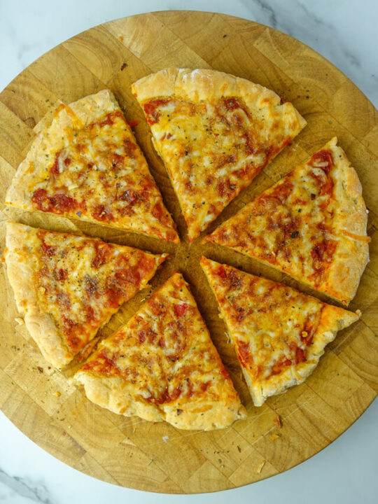

High Protein Pita Pizza

A basic high protein pizza
This is a basic high protein piza focused on one protein.
Total Calories: 722 per serving
Ingredients
- One large pita
- 3/4 cups of shredded cheese
- 94g bacon
- 1/4 cup of pizza sauce
Instructions
- Preheat oven to 400 degrees F
- Spread 1/4 Cup pizza sauce on pita bread, top with cheese & Bacon
- Place in oven on pizza stone or baking sheet and cook for 10 minutes
- Take out of oven and cut into 4-8 slices
Back to main